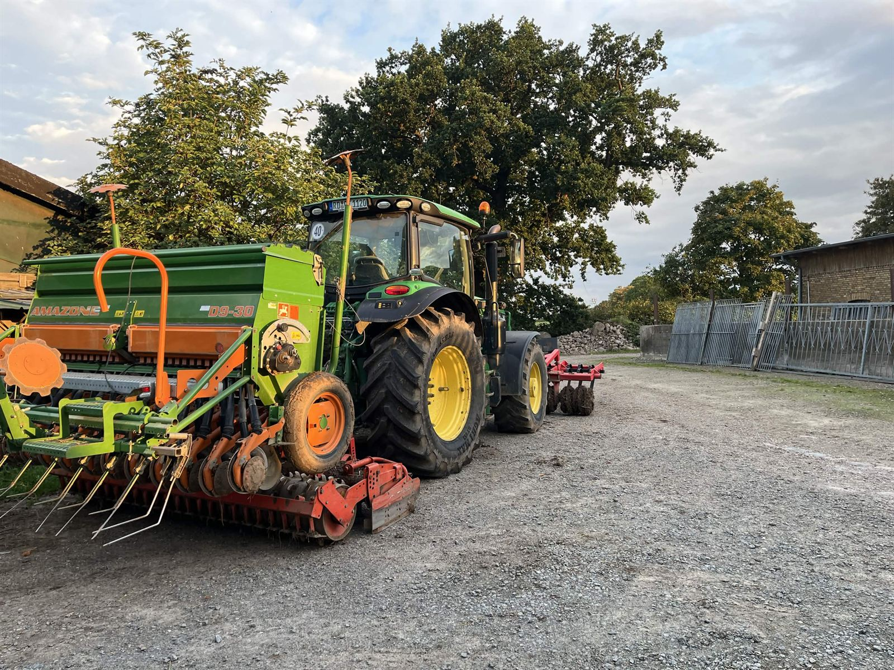
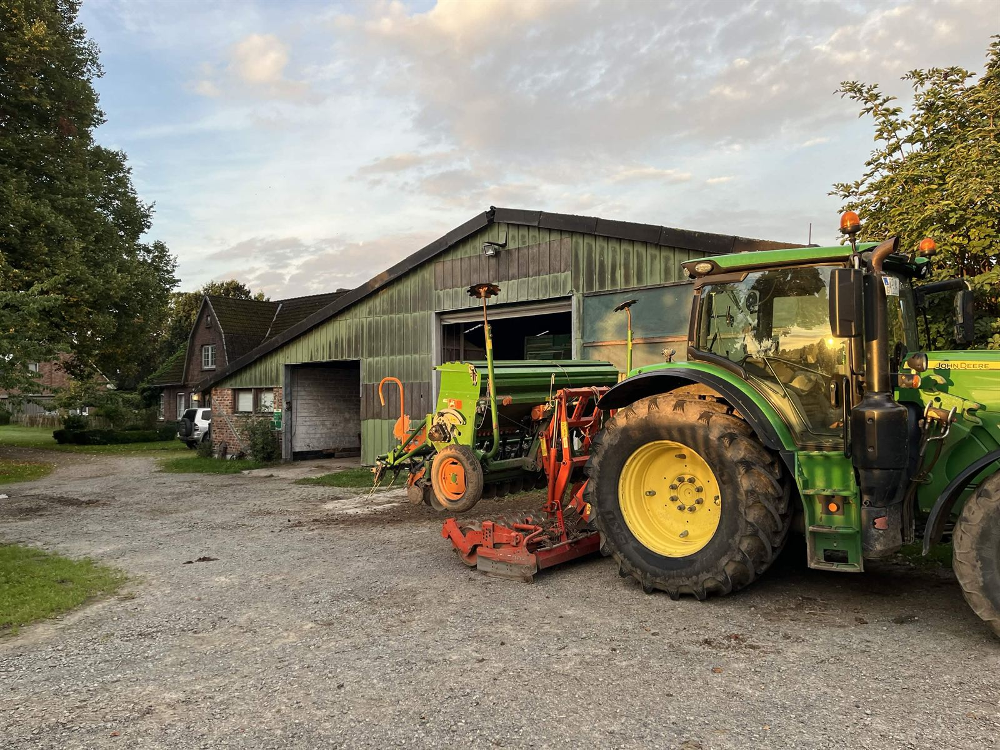
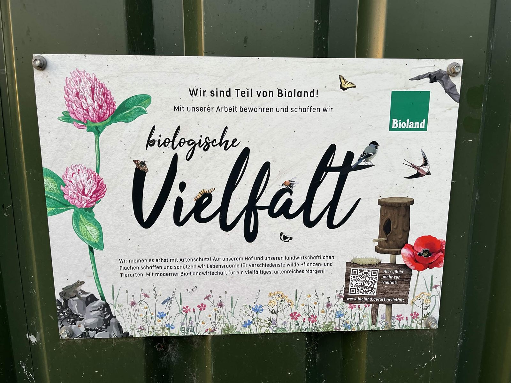

Acker liefert Futter
Kleegras, Ackerbohnen, Mais und Getreide vom eigenen Feld.

In der Dorfstraße in Schwedeneck entsteht der Betrieb, der bis heute in Familienhand ist.
Der Betrieb wird auf ökologischen Landbau nach Bioland-Richtlinien umgestellt, weil sie gut zur Bewirtschaftung, zur Betriebsführung und zur Vermarktung passen.
Wir führen den Betrieb gemeinsam. Regelmäßig arbeiten etwa zweieinhalb weitere Personen mit, dazu kommen je nach Saison ein Minijobber und Praktikanten.
Rund 100 Milchkühe stehen bei uns im Stall, dazu kommen etwa 20 Kälber pro Jahrgang. Im Schnitt geben unsere Kühe rund 8.000 Liter Milch im Jahr.
Auf dem Betrieb halten wir fünf Rinderrassen: Holstein Schwarzbunt, Holstein Rotbunt, Angler Rotvieh, Jersey und Braunvieh. Im Sommer gehen unsere Kühe auf die Weide und bekommen zusätzlich Silage, im Winter füttern wir ausschließlich Silage.
Einen Teil des Kraftfutters erzeugen wir selbst. Dafür bauen wir unter anderem Ackerbohnen, Erbsen und Gerste an. Die Ackerbohnen verarbeiten wir zu einem eigenen Proteinträger, auch die Maissilage stammt aus eigenem Anbau.
Unsere Milch vermarkten wir über die Gläserne Molkerei. Alle zwei Tage wird sie direkt bei uns auf dem Hof abgeholt. Einen eigenen Hofverkauf gibt es bei uns aktuell nicht. Wer wissen möchte, woher seine Biolandmilch kommt, ist trotzdem willkommen. Melde dich einfach vorher bei uns, dann schauen wir, ob ein Besuch oder ein Praktikum passt.
Auf unseren Ackerflächen bauen wir unter anderem Kleegras, Dinkel, Hafer, Ackerbohnen, Mais, Weizen und ein Erbsen-Gerste-Gemenge an. Ein Teil davon verfüttern wir direkt an unsere Tiere, so decken wir einen Teil unseres Futterbedarfs selbst.
Eine vielfältige Fruchtfolge ist uns dabei wichtig. Bei uns wechseln sich mindestens fünf verschiedene Kulturen ab, darunter auch das Kleegras, das dem Boden Stickstoff zuführt. Zwischenfrüchte gehören ebenfalls zu unserem Anbau und schaffen im Herbst zusätzliche Blühflächen.

Uns ist wichtig, möglichst viele Nährstoffe innerhalb unseres eigenen Betriebs zu halten. Ackerbau und Tierhaltung hängen bei uns eng zusammen.
Kleegras, Ackerbohnen, Mais und Getreide vom eigenen Feld.
Ein Teil des Futterbedarfs unserer Milchkühe stammt aus eigenem Anbau.
Organischer Dünger aus der Tierhaltung statt mineralischem Dünger.
Die Nährstoffe kommen wieder auf unsere Äcker und Wiesen.

Boden, Pflanzen, Tiere, Futter und Nährstoffkreisläufe hängen bei uns zusammen. Deshalb achten wir schon beim Boden auf möglichst geringe Verdichtung: breite Bereifung, niedriger Reifendruck, gute Durchwurzelung, Winterbegrünung und Schutz vor Erosion gehören für uns dazu.
Unkraut regulieren wir vor allem mechanisch, mit Hacke und Striegel, dazu achten wir auf eine gute Ackerrandhygiene. Bei einzelnen Kulturen setzen wir ökologisch zugelassene Saatgutbehandlungen ein.
Jedes Jahr überlassen wir außerdem rund einen Hektar unserer Fläche vollständig der Natur, als Brache. Wo genau diese Fläche liegt, wechselt von Jahr zu Jahr.
Bei den Traktoren setzen wir bevorzugt auf John Deere. Größere Erntearbeiten und die Gülleausbringung übernimmt bei uns teilweise ein Lohnunternehmer.
Auf unseren Dächern läuft eine Photovoltaikanlage mit einer Leistung von 150 kWp, also 150 Kilowatt bei voller Sonne. Erneuerbare Energie ist damit fester Teil unseres Betriebs.
Neben unseren Milchkühen und der Zucht leben bei uns drei Schweine, Gänse, Puten, Hühner und mehrere Katzen. Sie gehören zum Hofalltag, auch wenn sie keine eigenen Produktionszweige sind.
Was auf dem Acker beginnt, geht bei uns bis in den Zuchtstall. Wie unsere Rinderzucht daraus entstanden ist, zeigen wir dir auf der nächsten Seite.
Zur Rinderzucht GTR